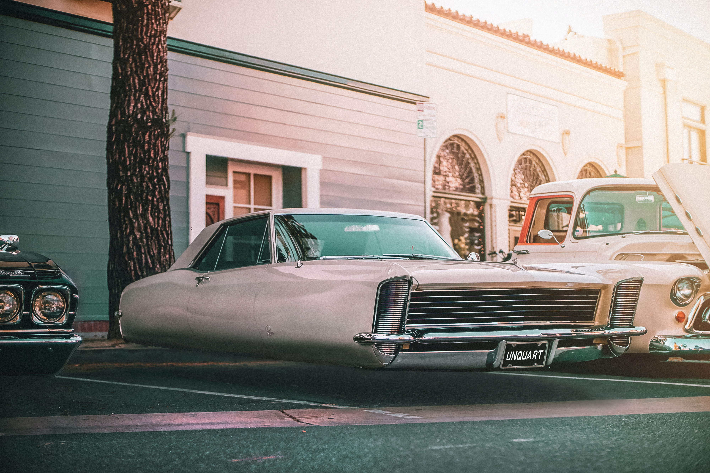
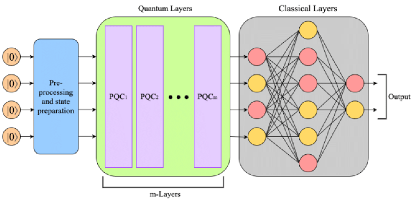

Flying Cars
Flying cars, once a fantastical vision confined to the realm of science fiction, are gradually edging closer to becoming a reality. These vehicles, which seamlessly merge the domains of aviation and road transportation, promise a future where urban and intercity commutes are faster, more efficient, and potentially more sustainable. Technological advancements in battery efficiency, autonomous navigation, and aerodynamics have accelerated the development and prototyping of flying cars. Many tech moguls and transportation companies are heavily investing in research, aiming to surmount challenges related to safety regulations, air traffic control, and public acceptance. If successful, these airborne vehicles have the potential to revolutionize our daily commutes, reduce road congestion, and herald a new era of urban mobility.

Flying cars have the potential to impact various industries, from transportation and urban planning to environmental sustainability. Here are some key aspects of the flying car revolution:
1. Enhanced Mobility: Flying cars can bypass road congestion and reduce travel times in densely populated urban areas.
2. Environmental Benefits: Electric and hybrid flying cars aim to be more environmentally friendly, with reduced emissions compared to traditional vehicles.
3. Safety Challenges: Ensuring the safety of flying car operations, including air traffic management and crash prevention, is a critical concern.
4. Infrastructure Development: The integration of flying cars requires the development of takeoff and landing infrastructure in cities.
Quantum Neural Processing Units
The Quantum Neural Processing Unit (QNPU) represents the next evolutionary leap in computational technology, bridging the worlds of quantum computing and artificial intelligence. The QNPU is a specialized chip designed to facilitate and accelerate complex machine learning tasks using the principles of quantum mechanics.
Key Features:
1. Superposition-based Processing: Utilizing the quantum principle of superposition, QNPU can process a vast amount of data simultaneously. This exponentially increases the speed of parallel processing tasks, making it especially potent for deep learning algorithms.
2. Quantum Entanglement: QNPU leverages the phenomenon of quantum entanglement to facilitate faster communication between qubits. This results in significantly reduced training times for neural networks.
3. Tunneling Accelerated Optimization: Quantum tunneling is exploited for faster optimization in neural networks, especially in reaching global minima in complex landscapes, avoiding traditional pitfalls like local minima.
4. Hybrid Architecture: While the core is fundamentally quantum, the QNPU is designed to seamlessly integrate with classical computational systems, allowing for a smoother transition phase and compatibility with existing infrastructure.

Quantum neural processing units have the potential to revolutionize artificial intelligence and computational tasks. Here are some additional insights into QNPU technology:
5. Quantum Machine Learning: QNPU can accelerate machine learning algorithms, making complex AI tasks more efficient.
6. Cryptography and Security: Quantum computing capabilities in QNPU may also impact encryption and cybersecurity.
7. Research and Development: Scientists and researchers are exploring various applications of quantum computing in areas like drug discovery and materials science.